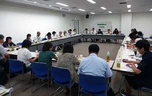

第51回埼玉県消費者大会実行委員会
 8月18日(火)13時30分より、浦和コミュニティセンター第15集会室にて、第5回実行委員会が開催され、35人(22団体)事務局2人が出席しました。
■議題
1．第4回実行委員会報告
事務局より資料にもとづき、前回からの修正・変更点となる項目について報告し、確認しました。
2．第51回大会基調報告第3次案について
第3回～第4回実行委員会での検討をもとに修正した第3次案を報告、検討し、基調報告の内容について確認しました。今後は基調報告の内容が変わらない範囲で、情勢にあわせた文章修正を行うことになりました。
3．埼玉県への要請書について
前回の実行委員会での論議、前年からの埼玉県政の変化を踏まえて作成した要請書案をもとに検討しました。内容については、基本的に確認され、文章表現の修正を行い、次回の実行委員会で確定させることになりました。また、引き続き要請事項については、各団体に持ち帰り次回実行委員会連絡と一緒に集約を行うことになりました。
4．大会当日の確認事項について
当日の実行委員会紹介で檀上に上がるメンバーについての確認、オープニングで朗読する文章、受付スタッフの要請など検討しました。オープニングの朗読については、いただいた意見を参考にして事務局で選定し、次回の実行委員会に報告することになりました。
5．大会当日のお弁当の扱いについて
前回の実行委員会で、例年同様にお弁当の手配をすることを確認を受け、具体的な内容について報告しました。お弁当の数については、8月31日を目安に事務局に連絡すること、間に合わない団体はその旨を事務局に連絡することを確認しました。
6．分科会について
 食、
食、 消費者問題、
消費者問題、 社会保障、
社会保障、 くらしの問題、
くらしの問題、 憲法・法律の5つの分科会にわかれて、当日の役割分担とスケジュールを中心に話し合いました。
憲法・法律の5つの分科会にわかれて、当日の役割分担とスケジュールを中心に話し合いました。
7．事務局連絡
埼玉県食に関する作文コンクールのご案内と、次回実行委員会までに提出いただくものを確認しました。
次回の実行委員会への出欠連絡
埼玉県への要請項目